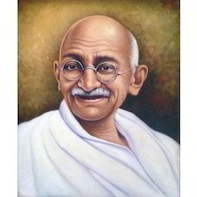

Mahatma Gandhi



Here is a timeline of Mahatma Gandhi's life
- 1869-Birth of Mohandas Karamchand Gandhi
- 1883-Gandhi and Kasturbai are married
- 1885-Death of Karamchand Gandhi, Gandhi's father
- 1888-Gandhi leaves for England to study law
- 1888-At the University College of Fort Hare, in Alice
- 1891-Gandhi passes the bar exam in England
- 1893-·Gandhi fails as a lawyer in India
- 1893-Gandhi accepts commission to spend a year in South Africa advising on a lawsuit.
- 1894-Gandhi elects to stay on South Africa, and founds the Natal Indian Congress
- 1896-Gandhi returns to India to collect his wife and children, returns to South Africa with them
- 1899-Outbreak of Boer War (1899-1901) in South Africa. Gandhi organizes an ambulance corps for the British.
- 1901-Gandhi returns to India to attend the Indian National Congress. G.K. Gokhale introduces him to nationalist leaders.
- 1901-1906-Gandhi struggles toward Brahmacharya, or celibacy, finally ending his sexual activity in 1906.
-Nationalists found the magazine the Indian Opinion, and soon print it on Gandhi's farm, the "Phoenix Settlement." - 1907-The Boer Republic Transvaal, now under the control of the British, attempts to register all Indians as members; Gandhi and others refuse to register. Their resistance efforts mark the first use of nonviolent non-cooperation by the Indian minority in South Africa, soon calledsatyagraha, or "soul-force."
- 1908-Gandhi is arrested and sentenced to two months in prison
"Great men and eminent men have monuments in bronze and marble set up for them,"
-- Pandit Jawaharlal Nehru, Prime Minister.